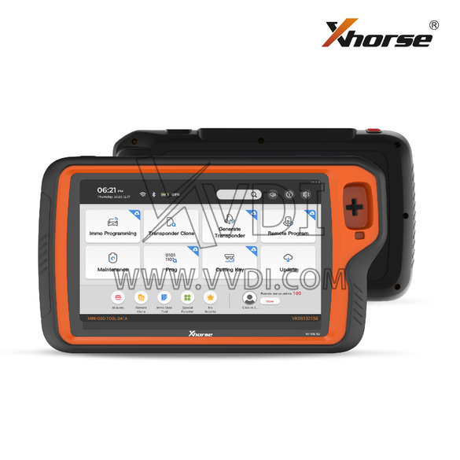
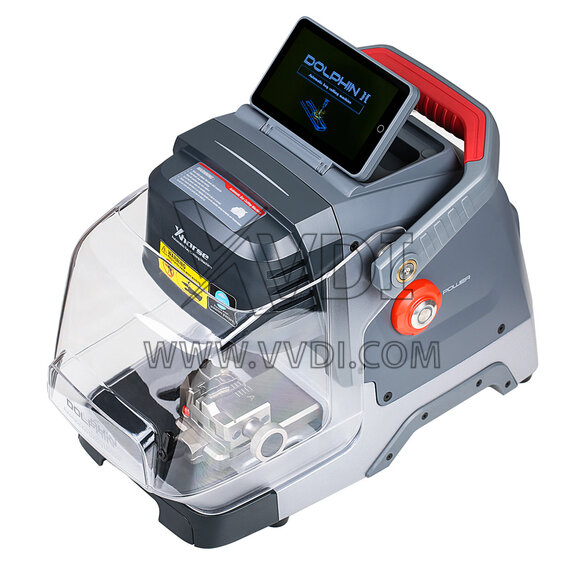

锁匠工具 Xhorse 到底值不值掏钱？一份算到骨头里的购买决策账本
从钥匙编程器到数控配匙机，Xhorse 一整套生态从几千到两万怎么选？免费版、积分体系、Token 消耗背后藏着哪些定价鸡贼？三类从业者帮你把账算明白。
开头：这钱到底花不花
我第一次接触 Xhorse 是帮一个开配匙店的朋友搬家——他一辆小面的后备箱塞得满满当当，从巴掌大的编程器盒到一人高的配匙机，全都印着同一只海豚 logo。"这一套下来花了多少？"我问。他没正面回答，只是把最新那款 Dolphin II XP-005L 拎出来放在桌上，屏幕亮起来的时候，我听见他嘴里嘀咕了一句："值不值，干半年再说。"
后来我翻了不少资料，又蹲了几个锁匠群观察了一阵子，发现对 Xhorse 的评价两极分化特别有意思——有人说"这是唯一一套能全流程跑通的工具，贵得有道理"，有人说"积分体系就是套在脖子上的绳子，越用越贵"。所以我把能查到的价格、版本差异、Token 消耗都整理了一遍，按不同使用强度算了三笔账，你自己对照看。

定价拆解：免费版给什么，付费版多什么
先把产品线按功能层分清楚，不然容易把钥匙编程器和配匙机混为一谈。Xhorse官网 大概有三条产品线：
钥匙编程器：核心是 Key Tool Plus，再往下有 VVDI2、VVDI Prog、Key Tool MIDI 这些分工明确的子产品。Key Tool Plus 是整套的"大脑"，负责读防盗数据、生成钥匙、写回芯片。VVDI Prog 是最底层的芯片读写器，OBD 直读失败时拆焊芯片就靠它。这一条线基本都是一次性买断，VVDI Prog 大约 1500~2500，具体底座适配器的标配清单和芯片支持列表，Xhorse文档 里列得非常细。Key Tool Plus 价格更高，老款 VVDI2 现在二手还在流通。
数控配匙机：按定位分三档。入门档 XC-002 Pro 几千块，主打"能切就行"；主流档 Dolphin 系列（XP-005 约 7000，升级款 XP-005L 约 10000）便携带电池，外出救援和店内都能兼顾；旗舰档 XC-TWINS 双子座约 18000，双固件切换（汽车钥匙 + 民用钥匙），工业级精度。这里有个值得注意的设计——Xhorse 把"切钥匙"和"编钥匙"分成了两条产品线，你可以只买其中一套，也可以配 Key Tool Plus 蓝牙联动，一条龙完成 All Keys Lost。
积分和 Token 体系：这是定价里最容易让人忽略、但长期使用成本影响最大的一块。Key Tool Plus 的基础功能（读芯片、写芯片、生成普通遥控钥匙）是买断之后就不再收费的，但在线计算类的服务要消耗积分或 Token：ID48 芯片在线克隆 1 个 Token，ID96 同样 1 个，奔驰密码计算走 MB Token 年费，宝马 BDC2/BDC3 密码消耗 BDC Token 或积分，云端遥控识别每次 1~10 积分不等。积分可以人民币买，也可以通过官方活动获得，Token 大部分走年费订阅制。
这里藏着一个定价上挺鸡贼的点：基础功能买断 + 核心在线计算按量计费。意味着入门门槛看起来不高（编程器买断就好），但你真干上了 All Keys Lost、遇到需要在线计算的冷门车型，这笔费用就会持续产生。锁匠群里有人做过统计，一个月如果接 5 台需要 ID48 克隆的单，光 Token 消耗就得两三百。

算账：三类从业者各算各的
算账这个事，最忌讳用别人的使用场景套自己的情况。我分三类人，每类都按"免费基础功能够不够"、"买断后每单位时间成本多少"、"Token 月度预估消耗"三个维度来算。
第一类：轻度用——业余爱好者、偶尔帮朋友配一把
这类用户的典型画像：家里有个旧钥匙想复制、或者帮朋友紧急救个车，一年用个三五次，不打算靠这个吃饭。
免费基础功能够不够？ 够。Xhorse下载 的 App 本身是免费的，基础的遥控拷贝、简单芯片读写、ID46 克隆这些常用功能都内置了，不需要额外花积分。钥匙材质不是特别偏门、车型不是特别新的话，买断一个 VVDI Prog（约 2000）或者 Key Tool MIDI（更便宜的入门编程器）就能覆盖 80% 的需求。
买断后每单位时间成本：假设一年用 10 次，按 VVDI Prog 2000 算，单次使用硬件成本 200 块。但考虑到你买它之前可能得花时间学芯片焊接、热风枪操作，这些隐性成本远高于硬件本身。VVDI Prog 的操作流程是"拆防盗盒 → 热风枪拆芯片 → 放入底座读数据 → 焊回"，光热风枪这一关就能卡死 80% 的业余玩家。
Token 月度预估消耗：0。业余场景基本碰不到需要在线计算的冷门芯片，全走本地数据库就够了。
结论：轻度用的话，Xhorse 不值。你完全可以花几百块买一把机械配匙机，解决 90% 的家用钥匙需求；汽车钥匙紧急情况找本地锁匠上门，一次一两百，比你自己置办一套工具划算太多。真爱好这个的例外，但爱好归爱好，别给自己找副业的压力。
第二类：主力用——开业 1~3 年的锁匠，每月 20~50 单
这类用户是 Xhorse 的目标客户，也是付费决策最纠结的一群——钱挣了一些但还没稳定，投入产出比必须精打细算。
免费基础功能够不够？ 基础功能够，但在线计算迟早要用。开业前半年可能都是常见车型，本地数据库能覆盖；但半年之后遇到 2015 年后的丰田智能卡、新款日产加密芯片、部分 BDC2/BDC3，这些都要在线跑 Token。而且 All Keys Lost 全丢场景的 AKL 数据库，XP-005L 自带的是 100+ 品牌 20000+ 车型，每周在线更新，这个免费增值是 Condor 老款没有的。
买断后每单位时间成本：按 Key Tool Plus（约 6000）+ Dolphin XP-005（约 7000）来算，入门主力套餐约 13000。假设每月 30 单，其中 20 单需要钥匙编程、15 单需要数控切割，这套工具把本来需要外包出去的活自己接回来了——外包一次编程收 300~500，你自己干成本就是芯片料钱。粗略估算，3 个月就能回本。如果一步到位买 XP-005L（升级款比 XP-005 贵 3000），M5 夹具一套搞定不用频繁换，无刷电机寿命是有刷的 5 倍，长期看反而省钱。
Token 月度预估消耗：主力用阶段每月大概 50~150 人民币。按群里从业者的反馈，ID48 在线克隆是高频消耗项，奔驰/宝马密码如果接高端车型会涨一些，但 MB Token 年费内可以覆盖一部分。一个实用建议：能本地数据库解决的就别跑在线，Token 留着给真搞不定的冷门。
结论：主力用阶段闭眼付，但别一步到位买旗舰。XC-TWINS 双子座 18000 的价格比 XC-MINI Plus 贵了 6000，多的是德国进口滚珠丝杠、双固件、250W 电机——这些提升对开业 1~3 年的店来说，边际效益还没那么明显。先用 XC-MINI Plus 或者 XP-005 把活练起来，等月单量上 60+ 再考虑升级不迟。
第三类：重度用——老店、连锁加盟店、专门做 All Keys Lost 的专精店
这类用户已经是 Xhorse 生态的重度玩家，对他们来说 Xhorse 不是可选品牌，而是工作流的基础设施。
免费基础功能够不够？ 早就不够了。重度用户的需求边界是覆盖最全的车型加密方案、最快的处理速度、最多的在线积分储备。Key Tool Plus 的云端遥控识别功能可以抓冷门遥控完整数据上传云端匹配，这对于专精店来说是"别人接不了的活我能接"的核心竞争力。这个功能每次 1~10 积分，按匹配难度算。
买断后每单位时间成本：按 XC-TWINS（18000）+ Key Tool Plus 全套（约 8000）+ VVDI Prog（2000）+ 全套底座适配器（约 1500）来算，旗舰主力阵容约 29500。每月 100+ 单的专精店，这一套半年就能回本。XC-TWINS 的 MINIPRO 固件覆盖民用钥匙加工，对于同时开展汽车配匙和家门配钥匙的店面，双固件等于两台机器的活一台干，工位利用率翻倍。
Token 月度预估消耗：300~800 人民币。专精 All Keys Lost 的店每月 ID48、ID96、BDC 这些在线消耗是常态，奔驰/宝马的年费 Token 建议直接订阅，按量买反而贵。有从业者透露，他们店里 Token 充值是月度固定预算的一部分，跟房租一样。
结论：重度用的话，Xhorse 就是必需品，而且要一次买对旗舰款。XC-TWINS 的滚珠丝杠精度和铣刀夹持稳定性，在每天高频切割几十上百把钥匙的场景下，切出来的钥匙容错率更低、返工更少——返工一次浪费的时间和材料，远不止旗舰款比主流款多花的那 6000 块。而且 Xhorse 的硬件生态是通的，Key Tool Plus 可以蓝牙连 Dolphin 配匙机、USB 连 VVDI Prog 编程器，一个工具包解决从芯片拆焊到钥匙切割的全流程，这种一体化在现场救援时效率差了不止一个档次。
替代方案：不付这笔钱有什么别的路
上面说的都是"值得买"的情况，那什么时候不值得？
同类免费工具或低价位替代：VVDI Prog 有国产兼容款，价格只要一半，但底座适配器的精度差一些，芯片插反导致烧毁的概率高不少。数控配匙机方面，国产"小海豚"仿款很多，3000 块就能买到功能近似的，但切割精度公差大一个数量级（±0.05mm vs ±0.01mm），精密钥匙切出来可能插不进锁孔。另外有一点必须提——Xhorse 有完善的 AKL 在线数据库（100+ 品牌、20000+ 车型、每周更新），国产替代基本都是靠车主社区自攒数据，覆盖度和准确性都差得多。
降低使用频率的代价：把需要在线计算的单外包给同行，自己只做本地能解决的车型。代价是客户的信任度——客户找你来配钥匙，你说"这车型我做不了"，下次可能就不找你了。而且 All Keys Lost 全丢单利润最高（一单能收 1500~3000），外包出去你赚个零头，但客户关系丢了。
跳过 Xhorse 选其他品牌：Condor 是配匙机领域的传统对手，纯配钥匙的话精度不差，但没有芯片编程能力，你还得再买一套编程工具，组合起来成本反而更高。Autel 的编程器功能也强，但生态不如 Xhorse 开放，底座适配器的通用性差。锁匠圈现在基本的共识是：编程选 Xhorse，配匙 Xhorse 和 Condor 二选一，要一体化就全套 Xhorse。
最终结论：哪类人闭眼付，哪类人再等等
最后把账收成一句话，你自己对号入座：
- 轻度用（年单 < 10）：永远不用付。要么用机械工具搞定，要么找专业锁匠。买一套 Xhorse 的钱够你找十几次专业服务，还不用学芯片焊接。
- 主力用（月单 20~50）：闭眼付，但别一步到位买旗舰。Key Tool Plus + Dolphin XP-005 或 XC-MINI Plus 的组合，是性价比最高的起步配置。Token 按月充值，能本地解决的别跑在线。
- 重度用（月单 > 60，专精 AKL）：必须付，而且直接上旗舰。XC-TWINS + Key Tool Plus 全套是当前锁匠工具的顶格配置，一体化工作流带来的效率提升，远超过多花的那几万块。Token 年费订阅，算进月度固定成本里就好。
我那个开配匙店的朋友，当初咬咬牙买了 Key Tool Plus + Dolphin XP-005L，现在店里已经扩成两个工位，他自己说最值钱的不是工具本身，是"别人接不了的活我能接"的那份底气。锁匠这个行业的利润结构很有意思——常见车型的配钥匙已经被打价格战打到几乎没利润，真正赚钱的恰恰是那些需要在线计算、需要拆焊芯片、需要 All Keys Lost 全丢复原的疑难杂症。而这些场景，正是 Xhorse 的生态优势所在。
所以值不值掏钱，最后还是那句话：看你接的是什么活。
顺便提一句，Xhorse 这套工具的完整资料我同步维护在 GitHub、Gitee 和 GitCode，国内访问走后两个会更快一些。